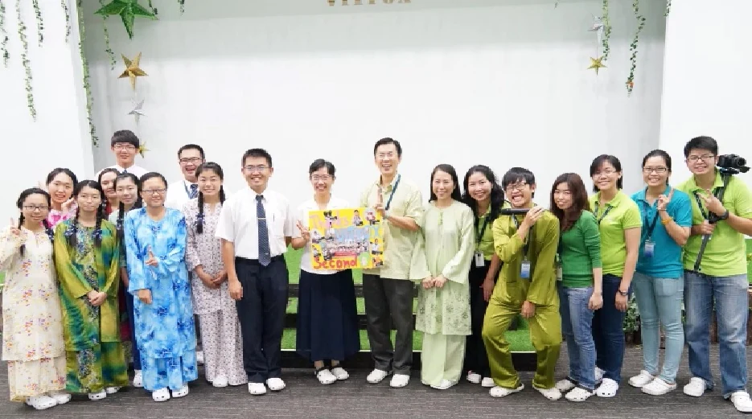
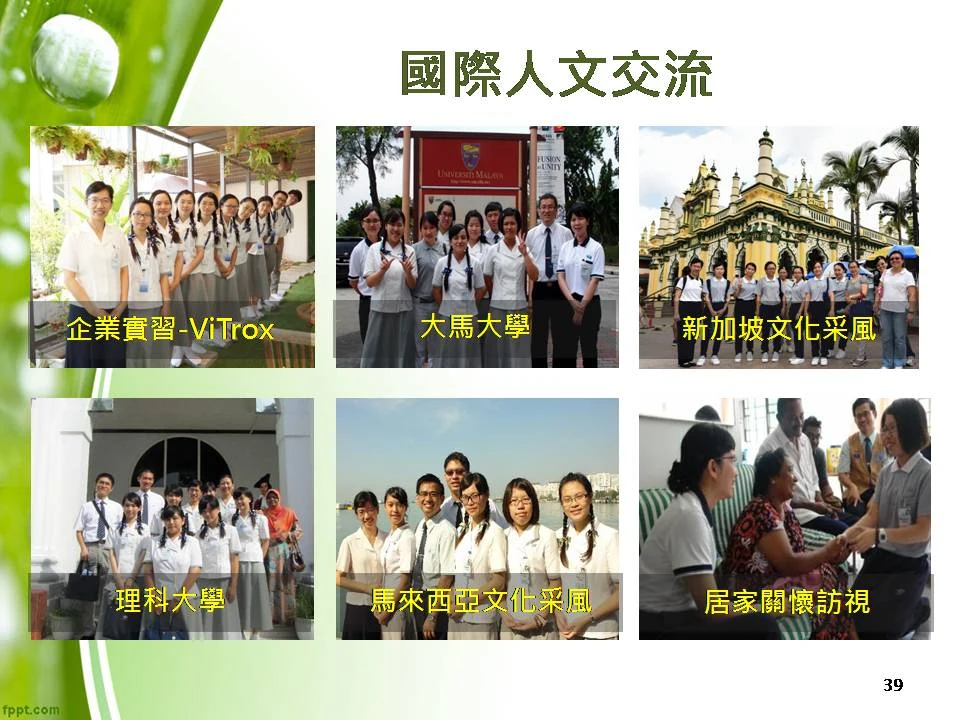
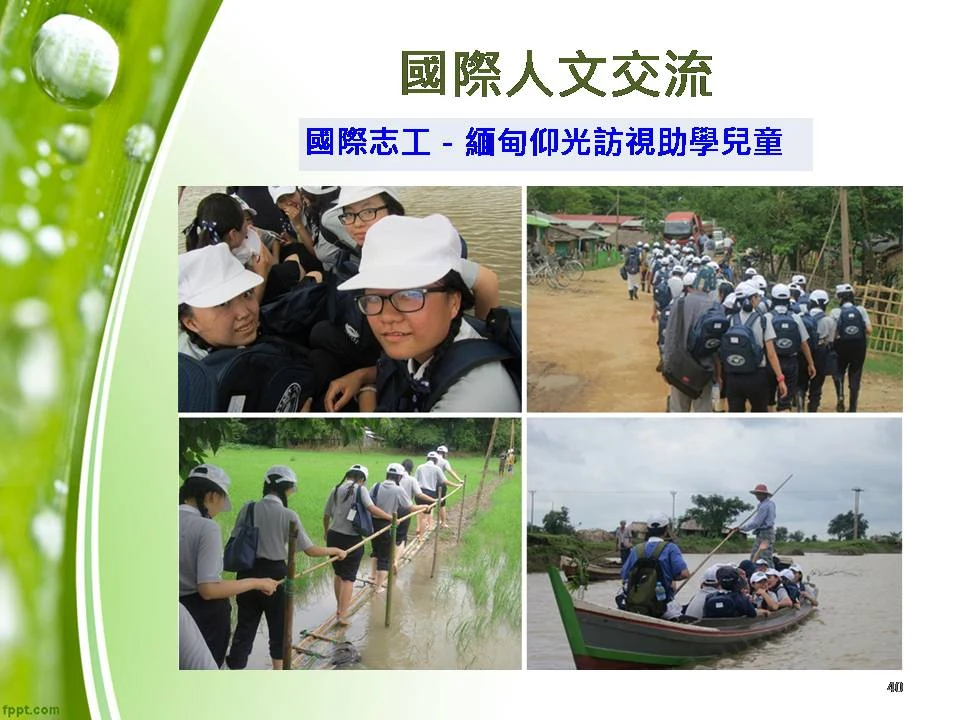

Department source collection
國際交流
Original department materials, presented in their publication language.
慈大經管 - 豐富的海外交流機會
慈 濟 大 學 經 營 管 理 學 系
慈大經管 - 英國諾丁漢特倫特大學暑期課程
觀看影片(影片長度 04:07)
慈大經管 - 馬來西亞ViTrox公司實習
觀看影片(影片長度: 03:59)
謝謝慈濟，能夠給學生提供這麼多的機會成長...
觀看影片(影片長度: 00:59)
慈大經管 - 德國漢堡應用科技大學品牌學院
德國漢堡應用科技大學─品牌學院校長單凡（Professor Dr. h.c. Shan Fan) 親自到訪本系，和本系學生分享品牌行銷與傳播專業。
學生近距離接觸國際學者，將來更有機會進行海外交流或攻讀雙聯學位。
- 高等教育品牌設計與傳播工作坊（Workshop of Higher Education for Branding Design and Communication）-
| 慈大經管 - 豐富的海外交流機會 慈 濟 大 學 經 營 管 理 學 系 | |
|---|---|
| 慈大經管 - 英國諾丁漢特倫特大學暑期課程 觀看影片(影片長度 04:07) | 慈大經管 - 馬來西亞ViTrox公司實習 觀看影片(影片長度: 03:59) |
| 謝謝慈濟，能夠給學生提供這麼多的機會成長... 觀看影片(影片長度: 00:59) | 慈大經管 - 德國漢堡應用科技大學品牌學院 德國漢堡應用科技大學─品牌學院校長單凡（Professor Dr. h.c. Shan Fan) 親自到訪本系，和本系學生分享品牌行銷與傳播專業。 學生近距離接觸國際學者，將來更有機會進行海外交流或攻讀雙聯學位。 - 高等教育品牌設計與傳播工作坊（Workshop of Higher Education for Branding Design and Communication）- |







